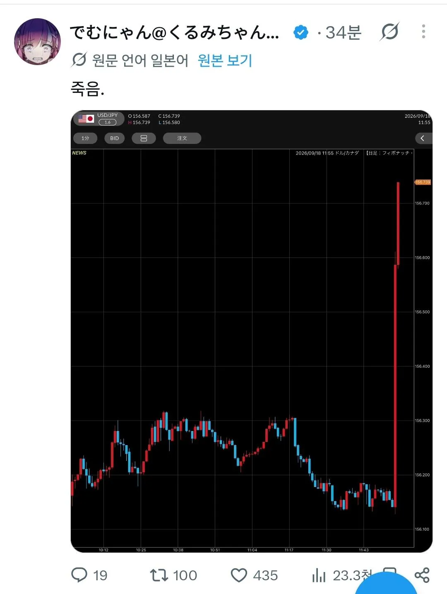
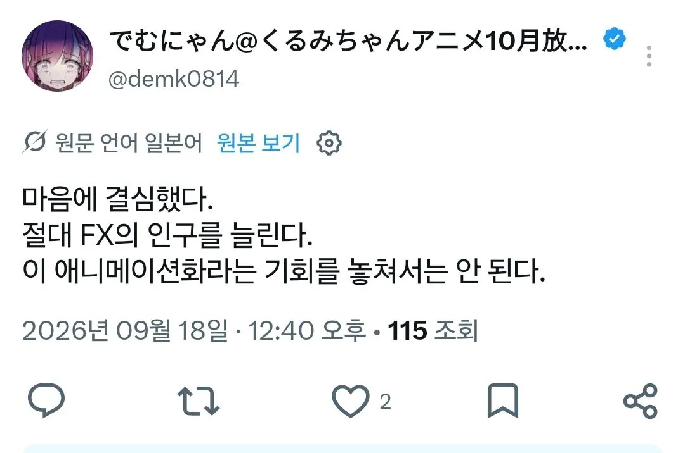

곧 나올 갓애니 FX전사 쿠루미쟝
화폐에 레버리지댕겨 선물하다 엄마는 죽고 그걸 본 딸이
나는 다르다 나라면 할수있다 따서갚으면된다 라며 선물시장에 뛰어드는 내용이다
그리고 오늘 12시 일본은행 금리인상발표

쿠루미쟝 작가 달러엔 숏치다 청산비이이이이임

나만 죽을수없다 애니를성공시켜 FX투자인구를 늘려 다같이죽겠다
곧 나올 갓애니 FX전사 쿠루미쟝
화폐에 레버리지댕겨 선물하다 엄마는 죽고 그걸 본 딸이
나는 다르다 나라면 할수있다 따서갚으면된다 라며 선물시장에 뛰어드는 내용이다
그리고 오늘 12시 일본은행 금리인상발표

쿠루미쟝 작가 달러엔 숏치다 청산비이이이이임

나만 죽을수없다 애니를성공시켜 FX투자인구를 늘려 다같이죽겠다
아니 엔달러 숏치는놈이 있었구나 ㅋㅋ
그래야 돈벌지 근데 지금은 약세 배팅이 정배지만 또 모르지 지진날지도
일본만화는 내수시장에서 성공하면, 차부터, 그다음 집을 바꾼다고 한다
데무냥은 아직도 단칸방에 있다
건실하게 돈 모았으면....
전인류의 안락사...
저번엔 5천만엔 날려놓고 또 날려먹네 ㅋㅋㅋㅋㅋ
그가 샀습니다. 그가 팔았습니다.

진짜 야수의 심장이었구나
우에다 이새끼 30분뒤에 기자회견인데 제발 데이터어쩌구 하지말고 시원하게좀 지르자 ...ㅅㅂ 엔화 개똥값이잖아